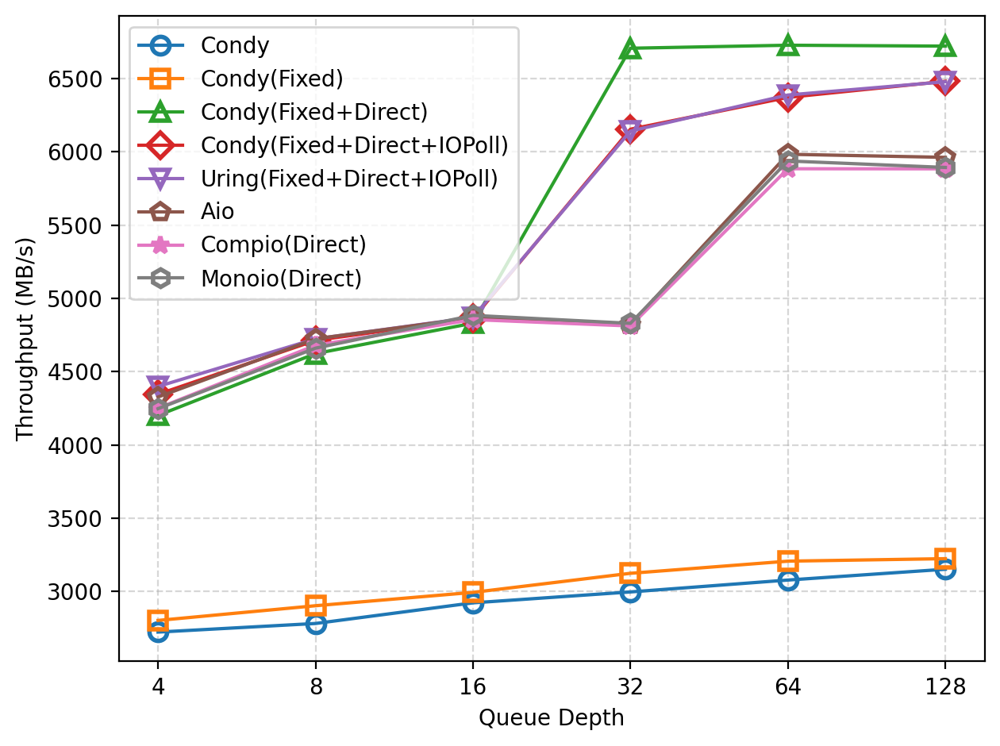
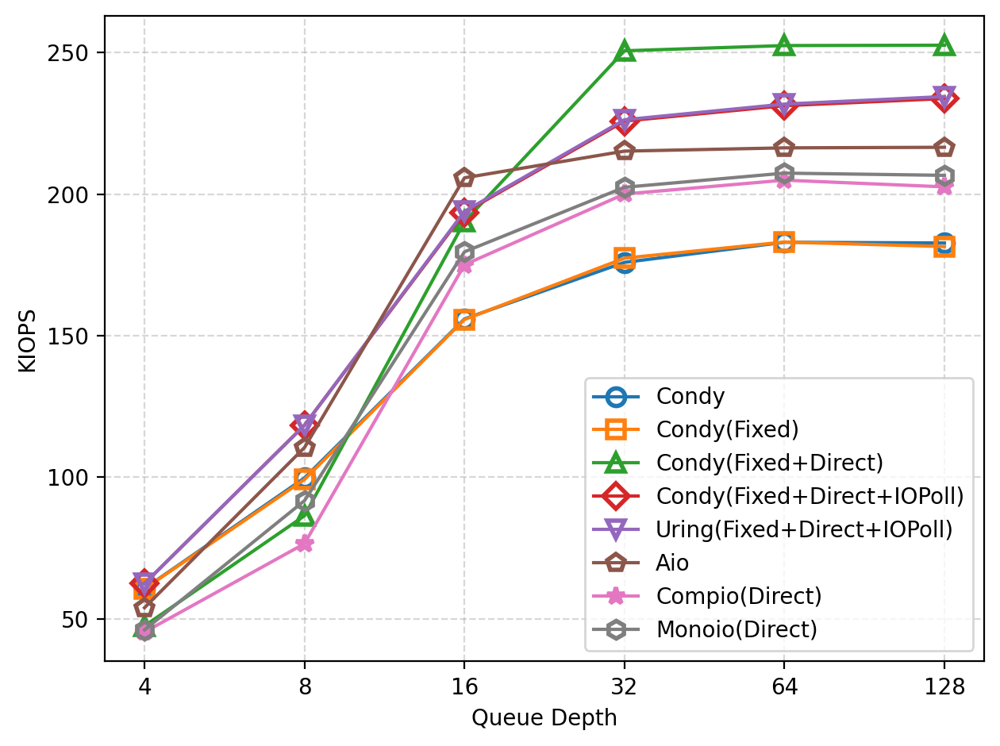
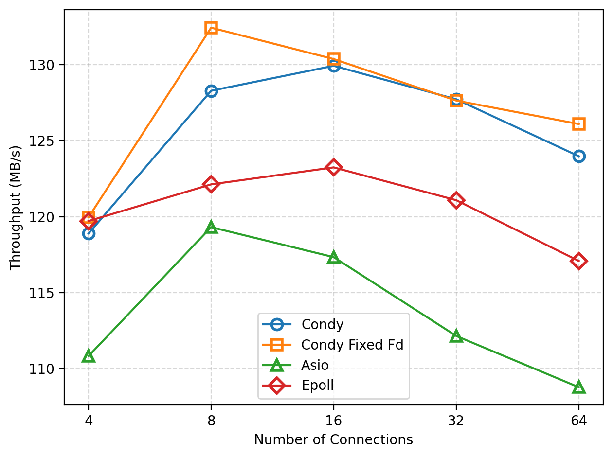
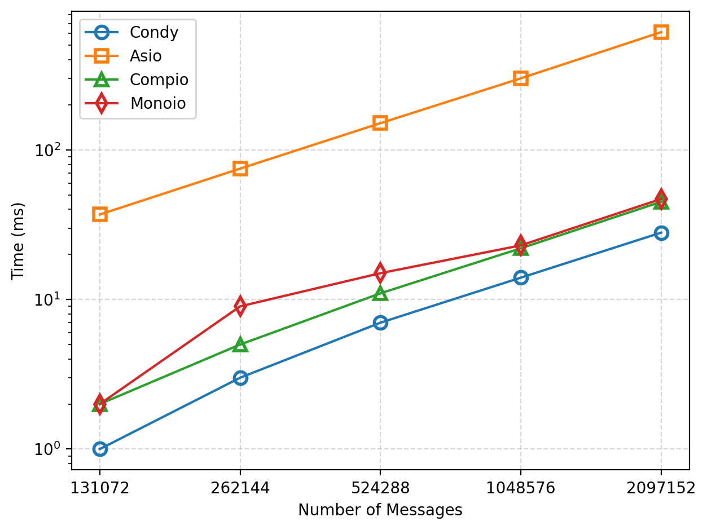
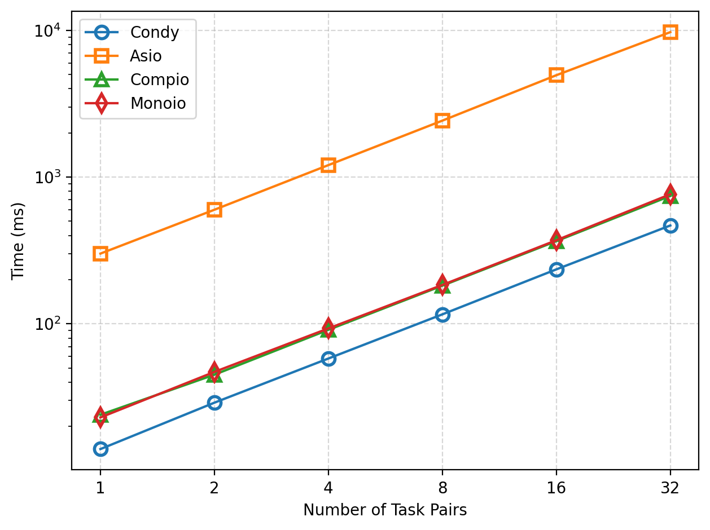
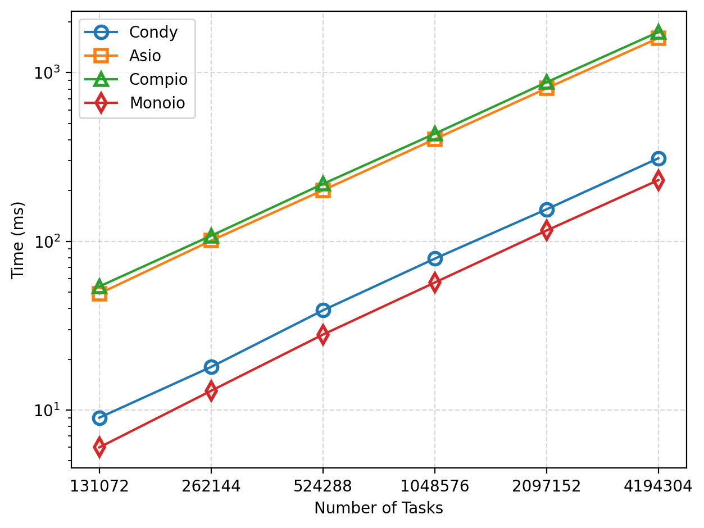
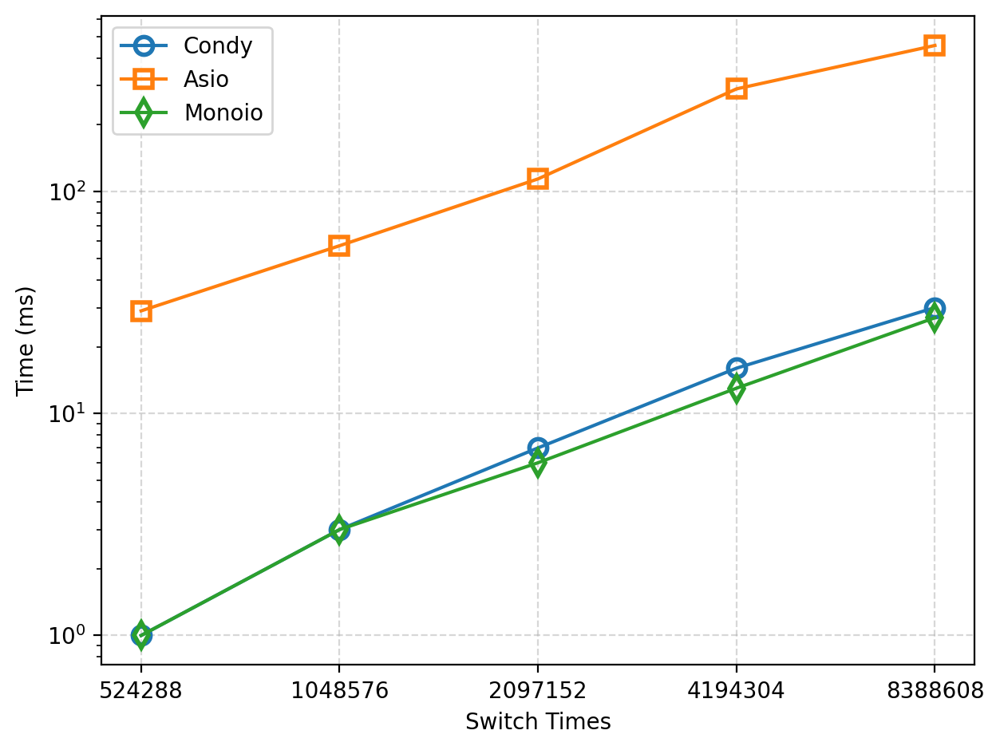

Condy 是一款基于 io_uring 的零开销、高性能协程运行时，专为 Linux 系统设计。它持续跟进内核 io_uring 的最新特性，充分发挥底层异步 IO 的极致性能。Condy 采用 C++20 协程，提供直观易用的异步编程体验，无需回调，代码更简洁、可读性更强。我们已将 Condy 与 libaio、liburing、epoll 等底层接口，以及 Asio、Monoio、Compio 等主流异步框架进行了全面性能对比。展现了 Condy 的性能优势。
基准测试源码见 condy-bench。
测试环境：
- CPU：AMD Ryzen 9 7945HX with Radeon Graphics × 16
- 存储：SK Hynix HFS001TEJ9X115N（NVMe SSD，1TB，PCIe 4.0 x4）
- 编译器：clang 18.1.3
- 操作系统：Linux Mint 22 Cinnamon
- 内核：6.8.0-90-generic
基线框架：
- libaio：Linux 上 io_uring 之前的异步文件 IO 框架。
- liburing：io_uring 本身，未与协程封装，使用上略不便。
- Asio：C++ 流行的 IO 框架。
- Monoio：基于 io_uring 的 Rust 协程框架（GitHub 星数高于 liburing）。
- Compio：另一个基于 io_uring 的 Rust 协程框架。
顺序文件读取
我们测试了 Condy 在 8GB 文件上进行 64KB 顺序读取的性能，收集吞吐量数据，并与 libaio 和 liburing 等的基线实现进行对比。
如图所示，随着队列深度（并发任务数）增加，读取吞吐量逐步提升。未启用 Direct IO 时，Condy 吞吐量不足 3500MB/s。注册文件和缓冲区（图中标记为 Fixed）后，性能有所提升。启用 Direct IO 后，Condy 吞吐量显著提升。队列深度为 4 时，Condy Direct IO 仅略优于 libaio，但随着队列深度增加，优势愈发明显，队列深度为 32 时吞吐量趋于饱和（约 6700MB/s）。进一步启用 IO Polling，在低队列深度下有一定提升，但队列深度增大后，吞吐量反而低于仅用 Direct IO。Monoio 和 Compio 在所有队列深度下吞吐量均低于 libaio，因此也远低于 Condy，未充分发挥 io_uring 性能潜力。Monoio 略优于 Compio。
此外，Condy 在相同配置下与 liburing 基线程序性能基本一致。

随机文件读取
我们测试了 Condy 在 8GB 文件上进行 4KB 随机读取的性能，收集 IOPS 数据，并与 libaio 和 liburing 等的基线实现进行对比。
如图所示，随着队列深度增加，读取 IOPS 逐步提升。队列深度较小时（如 <=4），非 Direct IO 的性能实际上高于 libaio 和 Condy Direct IO。注册文件和缓冲区后，性能略有提升，但增益不如顺序读取明显。Direct IO 与 IO Polling 结合时，Condy 在小队列深度（<=8）下表现最佳。
队列深度较大时，Direct IO 性能更好。队列深度为 16 时，libaio 达到最佳性能并饱和，而 Condy 随队列深度继续提升还能获得更高 IOPS。在此场景下，Condy Direct IO 性能最佳，IO Polling 略逊但仍优于 libaio。
Monoio 和 Compio 在所有队列深度下吞吐量均低于 libaio 和 Condy（Direct IO），最大性能差距达 50K IOPS（1.25x 性能提升）。Monoio 仍略优于 Compio。
同样，Condy 在相同配置下与 liburing 基线程序性能基本一致。

Echo Server
我们测试了 Condy 和其他方法实现的 TCP echo-server 随连接数增加的吞吐量。由于测试在本机进行，未能完全反映真实网卡性能，但仍可观察不同框架对网络 IO 的基本开销。

随着连接数增加，吞吐量先升后降，后期下降主要因客户端线程竞争所致。如图所示，Condy 优于 Asio 和 Epoll。注册文件后，Condy 可获得小幅性能提升。
Channel
我们对比了 Condy、Asio、Monoio 和 Compio Channel 的性能，分别改变消息数量和 Channel 数量，测量总耗时。（Monoio 和 Compio 使用 futures::channel::mpsc。）


如图所示，随着消息数和并发任务数增加，各框架总耗时线性增长。Condy 执行时间比 Asio 提升 20x，比 Monoio 和 Compio 提升 1.6x。
协程创建
我们对比了 Condy、Asio、Monoio 和 Compio 协程创建效率，改变协程数量并测量总耗时。

如图所示，随着协程数量增加，各框架总耗时线性增长。Condy 执行时间比 Asio 和 Compio 提升 5x。Condy 性能略逊于 Monoio，但平均每个协程创建时间仅增加 19ns（Monoio 为 55ns）。
协程切换
我们对比了 Condy、Asio 和 Monoio 协程上下文切换效率，通过反复切换协程测量总耗时。（Monoio 使用 futures_lite::future::yield_now，Compio 因耗时过长未参与此测试。）

如图所示，随着切换次数增加，各框架总耗时线性增长。Condy 执行时间比 Asio 提升 15x，与 Monoio 性能接近，单次切换最大差异不超过 0.8ns（约 3ns/次）。